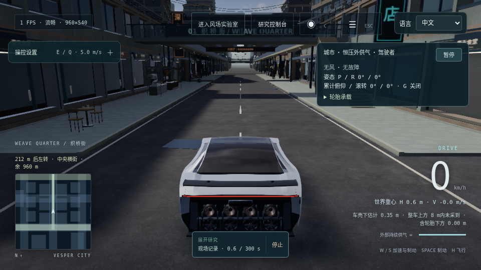
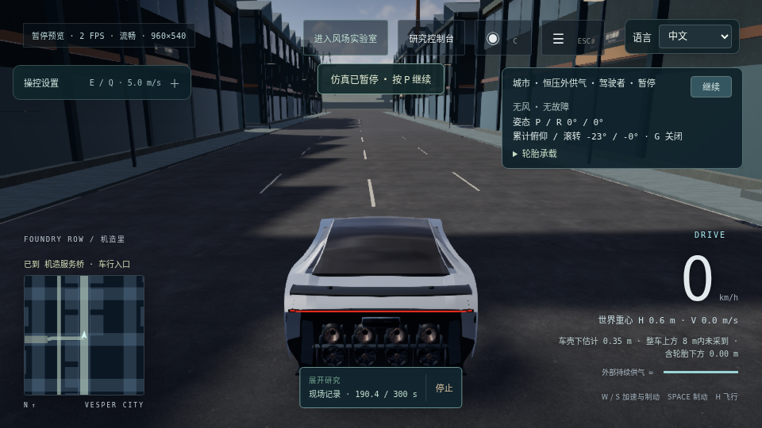

实际采集构建 28e9bc415a0509990cb88dcbb0a95117f013969e2283260208df5921c54b1d8f。一次从原有出生点经 Weave → Crosstown → Foundry 下层车行入口的真实按键运行。原有导航判定抵达并刹停；不覆盖上层连接或维护庭。
完整范围、输入覆盖、接触与日志缺口 · 原始执行报告 · 原生记录 4,149,005 字节 · 接触几何只读核查
190.4 s / 22,848 个物理步，3,809 个 20 Hz 轨迹点未抽稀。25 个末片刚体计数阳性、26 个微步阳性采样；compound 车体包含车轮硬限位，实际接触 pair 与冲量未采，不能称为全程无接触。1,130 个驾驶按键接收逐项吻合；外部日志缺 8 个 returned 条目，原遥测计数有 1 行差异，均原样保留。

